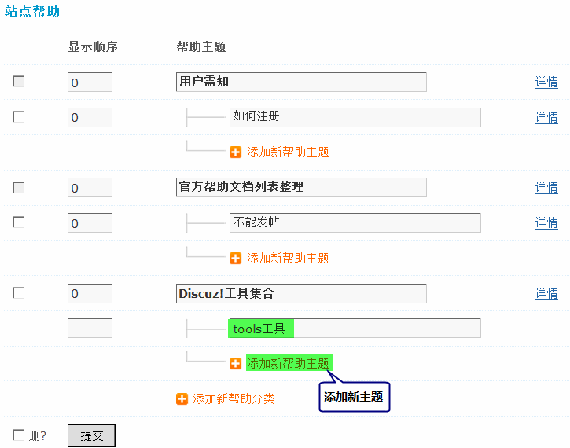

8.9. 站点帮助¶
站点帮助
用户登录站点，特别是新手用户，一时之间很难迅速找到自己需要的内容，但是不知道去哪里求助，找谁求助，怎么求助？而设立一个分门别类、层次清晰的“帮助系统”就很有效，能起到引导用户，为用户解惑的作用。帮助系统就像是一款解答用户疑问的FAQ，根据站点的性质不同，也能产生不同的变体，下面就从“设置”、“使用”二个方面谈谈帮助系统的功能操作以及运营技巧。
一、开启帮助系统
为了保持站点的简洁、清爽界面，帮助系统是默认关闭的。站长若想在前台显示帮助系统，需要进行如下操作：
1、 操作路径：【后台】=>【界面】=>【导航设置】=>启用内置的帮助导航，如下图所示：
2、 帮助系统在前台显示的效果，如下图所示：

二、设置帮助系统
1、站长可以根据自己站点的情况，添加个性化帮助信息。添加方法是进入【后台】=>【运营】=>【站点帮助】，如下图所示：
2、依次添加新帮助分类，在显示顺序文本框下填写数字，帮助主题的文本框中输入帮助分类的名称，设置好后，点击提交。
3、在帮助分类的基础上，进一步完善帮助主题。添加新帮助主题，在显示顺序文本框下填写数字，依次设置好帮助主题的名称。
添加好新帮助主题后需要填写帮助内容、帮助关键字等信息，需要点击主题右侧设置详情，如下图所示：
帮助标题：标题的定位要准确，什么样的帮助内容就填写相关的帮助标题。
上级分类：该标题的分类。
帮助标识：用于帮助信息的前台模版调用，前台模版中可以用{faq 帮助标识}调用此帮助，此标识唯一；如没有特殊需要请不要修改。
帮助关键字：是配合帮助标识用于帮助信息的前台的模版调用。
帮助内容：内容里可以设置帮助主题的详细内容，支持 HTML 代码。
三、如何使用帮助系统
1、满足用户的基本使用，包括注册、发帖等。
帮助系统的最普遍用法就是引导用户使用论坛。为了保障用户正常、熟练的使用论坛的基本功能，站长可以按照以下方法来参考设置帮助系统：
按用户须知、帖子相关操作、基本功能操作、论坛高级功能、其它相关问题来分类，如下所示：
用户须知
- 我必须要注册吗？
- 我如何登录论坛？
- 忘记我的登录密码，怎么办？
- 我如何使用个性化头像
- 我如何修改登录密码
- 我如何使用个性化签名和昵称
帖子相关操作
- 我如何发表新主题
- 我如何发表回复
- 我如何编辑自己的帖子
- 我如何出售购买主题
- 我如何出售购买附件
- 我如何上传附件
- 我如何实现发帖时图文混排效果
- 我如何使用Discuz!代码
- 我如何使用表情代码
基本功能操作
- 我如何使用短消息功能
- 我如何向好友群发短消息
- 我如何查看论坛会员数据
- 我如何使用搜索
其他相关问题
- 我如何向管理员举报帖子
- 我如何“打印”，“推荐”，“订阅”，“收藏”帖子
- 我如何设置论坛好友
- 我如何使用RSS订阅
- 我如何清除Cookies
- 我如何联系管理员
2、增加社区流量、增加用户活跃度。
如果论坛已经经过了长时间的发展，用户已经熟悉使用论坛各种功能，站长就可以设置其它类型的帮助系统，用以吸引新用户，或者增加用户活跃度。以“增加用户活跃度”为例，站长可以按照以下方法来参考设置帮助系统：
首先，为“活跃用户”起一个有吸引力的名字，例如“超级用户”、“核心元老”、“尊贵用户”等，首先在名称上增加他们的荣誉感；其次，说明成为超级用户的方法以及特权，鼓励用户增加自己在论坛的活跃度来成为超级用户；最后说明超级用户的特权，例如拥有更多论坛功能，以及获得更多积分等。
站长具体可以按照用户须知、积分说明、基本操作、其它相关问题来参考分类，如下所示：
用户须知
- 我怎样成为超级用户？必须要每天登陆吗？
- 超级用户享有怎样的特权？
- 超级用户能获得多少积分？
- 超级用户有什么醒目标示？
积分说明
- 积分可以上传、下载附件吗？
- 积分可以发表特殊贴吗？
- 积分可以购买勋章吗？
- 积分可以购买道具吗？
- 积分还能实现哪些功能？
基本操作
- 超级用户兑换积分功能
- 超级用户的“超级”功能
其他相关问题
- 我如何联系管理员？
- 我如何向管理员申请成为“超级用户”？
- 其它
3、专业社区帮助特定用户。
如果论坛是专业性论坛，站长可以把帮助系统打造为专业的术语解答，帮助新手快速了解基础知识，快速融入社区。以游戏论坛为例，站长可以按照以下方法来参考设置帮助系统：
新手注册、新手操作、游戏简介、游戏攻略、加入帮派等。具体内容不再冗述，主要目的是帮助新手玩家，快速了解游戏，融入社区，和老玩家打成一片。
4、服务会员，设立FAQ专区。
“产品与服务”是任何一个有竞争力的网站所必须具备的二要素。以地方社区为例，不仅要为会员提供好的社区产品（例如本地新闻资讯、活动互动、社交游戏等），还必须提供良好的服务，例如引导会员更好的使用社区，解答他们的疑问。站长可以模仿很多的FAQ系统（常见问题解答），把帮助系统设立成为社区FAQ，把用户最常遇到的问题、最常咨询的问题汇总到FAQ中，这样当用户遇到了问题，可以自行到FAQ中查阅，省却不少用户咨询、等待回答的时间，有效增加用户美誉度。